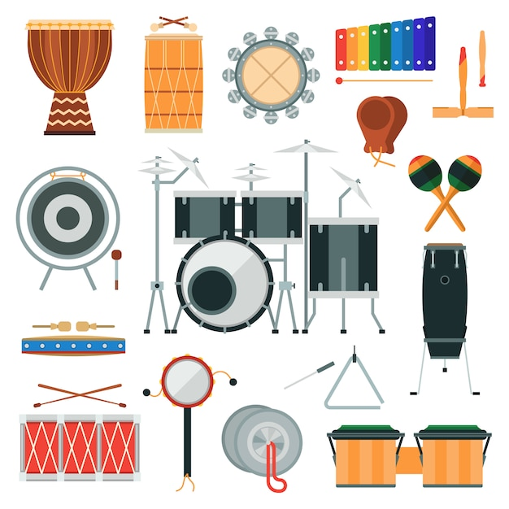
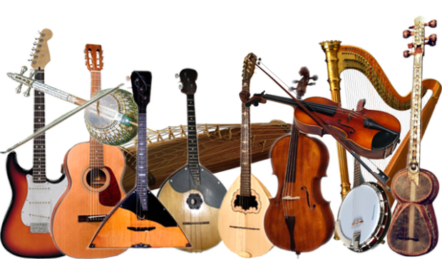

К ударным инструментам относятся табла, тамбурин, бубен, маракас, ковбелл, колокольчики, шейкеры, конго, бонго, треугольник, трещотка, деревянная коробочка, кастаньеты и десятки других этнических ударных инструментов. Употребляются, в разном наборе, во всех видах музыкальных оркестров и ансамблей.

Типичными представителями струнных инструментов являются классические скрипка, виолончель, альт, контрабас, арфа и гитара, а также множество самых разных народных инструментов: комуз, хомус, кыяк, кобыз, домбыра, гусли, балалайка, домра и другие.

- Музыкальные инструменты. Определения
- Духовые и клавишные инструменты